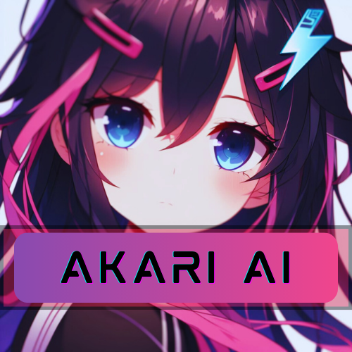

Welcome to AkariNet
A few quick choices so Akari feels right for you. You can change everything later in Settings.
Who should greet you?
Pick a character. This sets the avatar, voice personality defaults, and wallpaper.

Akari
Default assistant with VRM avatar
Akari Winter
Same personality, winter look
Hiyori
Live2D character, Gemini AI
How should Akari listen?
Choose how you start talking to Akari. You can refine this later.
Tune listening
Pick a speech recognizer, then test wake word and voice activity. Mic permission is required for the test.
Press the button, allow the mic, then say “Hey Akari”.
How should Akari talk?
Spoken replies. Text chat always works either way.
How should Akari think?
Smarter answers use an AI model. You can switch anytime in Settings → Intelligence.
You’re all set
Akari will load with your choices. Open Settings anytime to tweak voice, AI, wallpaper, and more.